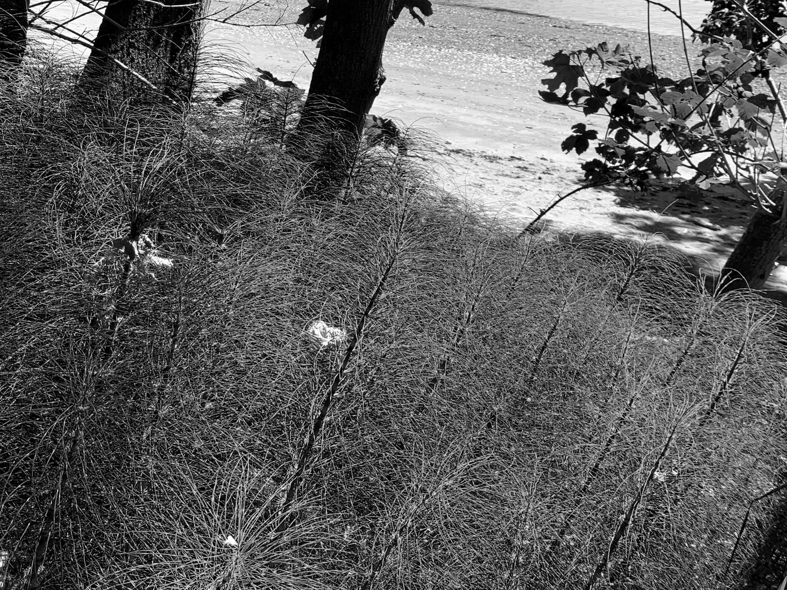
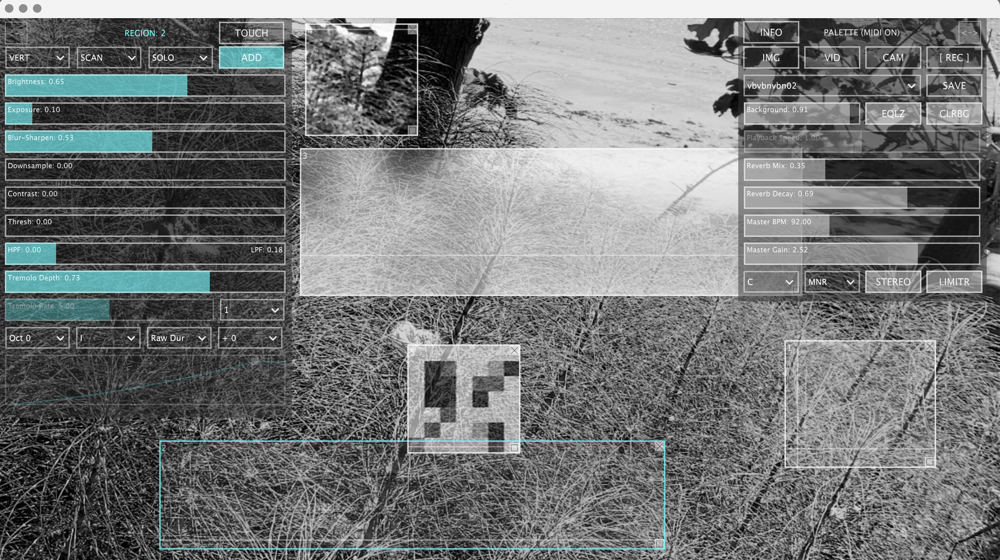
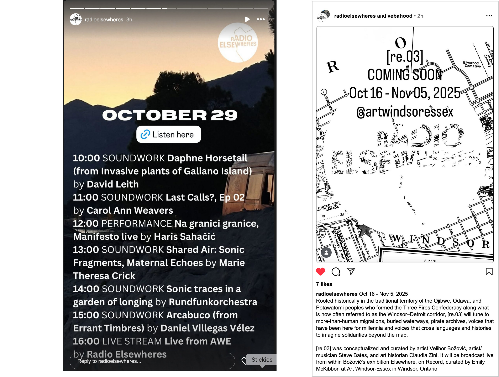

David Leith :: Work :: Invasive Plants of Galiano Island

Photographs of the plants as graphic scores, then further transformed into waveforms / wavetables for audio manipulation and sound design.

The final piece presented on Radio Elsewheres in October 2025.
As a relative newcomer to Galiano Island (located in the rain forest of the British Columbia coast) I have noticed ubiquitous changes in the local vegetation. Some changes happen very quickly while others slowly make their way. The invasives upset the balance of nature by displacing native plants. There will be a loss of habitat or food supply for native animals like birds and deer as well as for livestock. These invasives first move in are quite often invited into local gardens, then make the escape out into the world ignoring most borders by many means: birds, humans other animals.
Spurge-laurel (Daphne laureola) is listed as a poisonous plant by the Canadian Poisonous Plants Information System, and as a toxic plant by Worksafe BC. Its toxic sap can cause skin rashes, nausea, swelling of the tongue, and coma. Some of even more aggressive ones in our neighborhood include Scotch Broom (Cytisus scoparius), Common tansy, also toxic (Bitter buttons, Cow bitter, Golden buttons), and Horsetail (Equisetum spp.). One can see that they will take over and squeeze out other plants and possibly animals if they don’t adapt.
It seems unstoppable. Nature takes the lead here.
My recent work unwraps my emotional layers on these invasive plants: how they move and migrate and what are the effects of this. Who wins and who loses?

2025